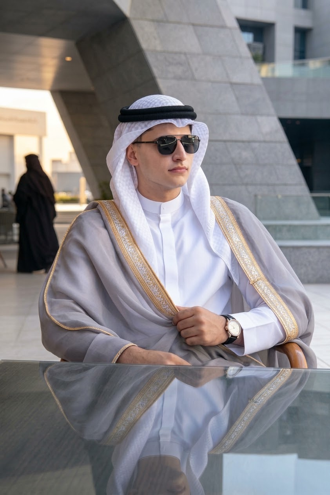

تحليل شامل لاجتماعات قطاعي التخطيط الاستراتيجي والموارد البشرية خلال الفترة من يوليو إلى أكتوبر 2026، مع رسوم بيانية متحركة وتحديد أوجه التقصير والتوصيات وخطة التحسين.

إعدادم. السيد الجوهري السيدلقطات من بيئة العمل والاجتماعات والتخطيط
مؤشرات متحركة باستمرار تعرض نسب الحضور الحقيقية
ملخص الاجتماعات التي سُجّل فيها الحضور والغياب فعلياً
نسبة الحضور = الحضور ÷ (الحضور + الغياب) لكل اجتماع
سجّل القطاع 11 اجتماعاً ببيانات مكتملة. أفضل أداء كان في 8 سبتمبر (81.8%)، وأضعفه في 5 أكتوبر (22.7%). الشهر الأقوى هو سبتمبر بمتوسط 65.9%، بينما تراجع أكتوبر إلى 35.2% رغم اجتماع 23 أكتوبر الذي بلغ 60%.
لاحظ أن اجتماعي 2 و5 أكتوبر سجّلا 22 مشاركاً مقابل 10 في معظم الاجتماعات الأخرى، وهذا يستدعي التحقق من قائمة المدعوين.
حضور وغياب الاجتماعات المسجلة (سبتمبر – أكتوبر)
سُجّل 7 اجتماعات بالبيانات. بلغ الحضور الإجمالي 47.1%. أقل اجتماع كان 5 أكتوبر (23.1%) ثم تحسّن تدريجياً حتى 60% في 23 أكتوبر، وهو اتجاه إيجابي واضح خلال أسبوعين (23% ← 33% ← 47% ← 50% ← 60%).
أما اجتماعات يوليو (3) وأغسطس (1) وأحد اجتماعات سبتمبر فلا توجد لها أرقام.
متوسط نسبة الحضور لكل شهر
قراءة صريحة للنتائج
الاستراتيجي: 35.2% فقط، والغياب بلغ 17 من 22 في اجتماع 5 أكتوبر.
معظم اجتماعات يوليو (10 من 11) وأغسطس بلا أرقام حضور، مما يمنع قياس الأداء.
تكرار تاريخ 23/8 مرتين، وتاريخ 23/7/2027 يبدو خطأ كتابياً، وخانة فارغة في الموارد البشرية.
ارتفع الحضور في سبتمبر ثم انخفض بحدّة في أكتوبر، فلا استقرار في الالتزام.
إجمالي المدعوين يتراوح بين 4 و22 للاجتماع الواحد دون توثيق السبب.
سبتمبر في الاستراتيجي (81.8% كأعلى نسبة) وتحسّن الموارد البشرية المتواصل في أكتوبر.
إجراءات عملية قابلة للقياس
نموذج رقمي واحد لكل اجتماع يتضمن التاريخ والحضور والغياب والسبب، وتسجيله خلال 24 ساعة.
يوم ووقت ثابتان أسبوعياً مع تذكير تلقائي قبل 24 ساعة وقبل ساعة.
هدف شهري لكل قطاع، مع مراجعة أسبوعية للنتائج ومناقشة الاجتماعات التي دون 50%.
تصنيف الأسباب (عذر، تعارض، عدم إبلاغ) لمعالجة الجذر لا الأعراض.
أجندة قبل الاجتماع بيوم ومحضر موجز بعده، لرفع قيمة الحضور.
تحديث هذا التقرير شهرياً ببيانات كاملة ومقارنة بالأشهر السابقة.
تقدّم متوقع نحو المستهدف (توضيحي، وليس بيانات فعلية)
توحيد نموذج التسجيل وتصحيح التواريخ المكررة.
تفعيل التذكيرات التلقائية وإعلان جدول ثابت.
متابعة أسباب الغياب والتواصل مع الأعضاء الأقل حضوراً.
تقرير مقارنة وقياس الوصول إلى 75%.
فيديوهات تعمل تلقائياً ومعرض صور لبيئة العمل والاجتماعات (اضغط على أي صورة لتكبيرها)